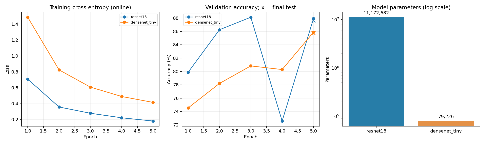
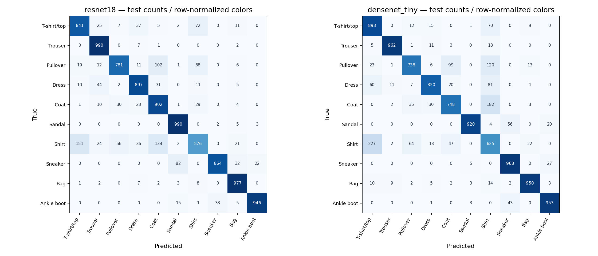

第17周完成了BatchNorm、ResNet和DenseNet的结构练习，但只实际训练了ResNet。本周按上一份周报的计划补齐DenseNet训练，并把两个模型放在相同数据划分和更新预算下观察。重点是学会控制实验条件、统一指标口径和解释错误类别。
实际完成：8个示例、4项自动测试；两个模型均训练5轮并通过保存恢复一致性检查。固定最后一轮测试准确率分别为87.64%与85.77%。实验实际执行于2026年11月17日，周报按原有周次顺延为11月22日。
一、先把BatchNorm手算清楚
用三行两列输入[[1,2],[3,6],[5,10]]核对均值、方差、运行统计和推理输出。两列均值为[3,6]，训练前向使用有偏方差[8/3,32/3]；在momentum=0.1、初始运行均值为0、运行方差为1时，更新后的running mean为[0.3,0.6]、running variance为[1.3,2.5]。
训练前向和运行方差更新采用的估计方式需要分别理解；本例逐项与PyTorch输出核对。切换eval后使用运行统计，且统计量保持不变。最终训练集、验证集和测试集指标统一使用eval，逐轮在线训练准确率则单独保留。
二、训练前固定实验条件
两模型均使用Fashion-MNIST中相同的12,000张训练图、2,400张独立验证图；官方测试集10,000张。输入缩放到96×96并归一化，batch size为128，固定seed=42、Adam学习率0.0003、weight decay为0.0005、5轮训练，每模型共470次参数更新。每次创建相同种子的DataLoader，让索引划分和批次顺序一致。
方案在训练前保存到实验方案JSON，固定最后一轮作为报告模型，不按验证最高点或测试成绩更换轮次。测试准确率、类别召回率、混淆矩阵和前12个错误索引从同一次测试遍历收集。两份划分的SHA-256一致，训练集与验证集没有重叠。
三、说明比较的具体网络
代码直接复用第17周模块。ResNet是包含8个残差块的预激活式教学变体，块内为BN→ReLU→Conv，参数量11,172,682；它与教材展示的经典后激活块顺序不同。DenseNet-tiny使用4个稠密块，每块2层、growth rate为16，参数量79,226；过渡层用1×1卷积和平均池化控制通道与空间尺寸。
这两个具体模型在容量上差别很大。共同的学习率和训练轮数便于教学对照，但并不保证各自达到最佳状态，也不表示消耗相同算力。
四、五轮结果与曲线
| 模型 | 参数量 | 训练准确率 eval | 验证准确率 | 测试准确率 | 训练及验证秒数 |
|---|---|---|---|---|---|
| resnet18 | 11,172,682 | 93.88% | 87.92% | 87.64% | 32.73 |
| densenet_tiny | 79,226 | 87.06% | 85.88% | 85.77% | 19.57 |
表中训练准确率来自训练结束后的eval评估。耗时为CUDA边界同步后记录的五轮训练加逐轮验证，不包含最终训练集与测试集评估、权重保存和恢复。训练顺序固定为ResNet再DenseNet，单次计时可能受到缓存和硬件状态影响。

resnet18
| 轮次 | 在线训练损失 | 在线训练准确率 | 验证损失 | 验证准确率 |
|---|---|---|---|---|
| 1 | 0.7097 | 75.58% | 0.5199 | 79.88% |
| 2 | 0.3593 | 86.73% | 0.3680 | 86.25% |
| 3 | 0.2807 | 89.77% | 0.3379 | 88.12% |
| 4 | 0.2237 | 91.67% | 1.0984 | 72.58% |
| 5 | 0.1831 | 93.00% | 0.4273 | 87.92% |
densenet_tiny
| 轮次 | 在线训练损失 | 在线训练准确率 | 验证损失 | 验证准确率 |
|---|---|---|---|---|
| 1 | 1.4874 | 61.94% | 1.0038 | 74.54% |
| 2 | 0.8258 | 78.11% | 0.7030 | 78.21% |
| 3 | 0.6093 | 81.80% | 0.6609 | 80.83% |
| 4 | 0.4913 | 85.39% | 0.6176 | 80.29% |
| 5 | 0.4172 | 87.05% | 0.4573 | 85.88% |
ResNet第4轮验证准确率出现明显下降，第5轮又回升；本次保留完整曲线并按预先约定报告第5轮。这里尚未验证波动原因，不能仅凭这条曲线归因于BatchNorm或某个具体组件。固定随机种子也不等于开启所有CUDA算子的确定性保证，因此本周ResNet与上周结果存在小幅差异。
五、从混淆矩阵看错误

resnet18：真实Shirt预测成T-shirt/top，151张；真实Shirt预测成Coat，134张；真实Pullover预测成Coat，102张。这些统计来自固定最后一轮的一次测试遍历。
densenet_tiny：真实Shirt预测成T-shirt/top，227张；真实Coat预测成Shirt，182张；真实Pullover预测成Shirt，120张。这些统计来自固定最后一轮的一次测试遍历。
矩阵的行表示真实类别、列表示预测类别，格内数字是样本数，颜色按行归一化。衣物类别存在相似外形，错误计数可以帮助定位后续需要逐图观察的类别，但仅凭矩阵不能证明模型关注了哪个图像区域。
六、代码验证与结论边界
4项自动测试覆盖不整批样本的损失加权和错误索引、空评估的明确报错、eval不修改BatchNorm统计，以及两个真实网络的梯度更新。8个编号示例覆盖手算、划分、结构、训练、绘图、权重恢复和易混类别汇总。两个模型均在保存前后用8张验证图检查logits逐位一致。
本次只有一个种子和一种训练预算，没有搜索两模型各自最优超参数。相同轮数不等于相同计算成本，教学变体的差异也不能概括为两类架构的普遍优劣。官方测试集在往周教学中已经使用，本次成绩不是独立研究确认；后续不能一边据此调参，一边继续把它视作未见测试集。
七、下一周安排与参考资料
下周进入第8章8.1—8.3，先理解序列模型、文本预处理、词表与语言模型数据集，完成字符编码和随机/顺序采样检查，再为循环神经网络准备输入。卷积网络部分保留本次权重、曲线和实验记录，便于复习。